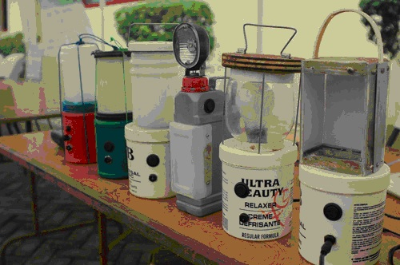

2015-08-24
日漸重要的開放性在地設計
設計和創新無所不在，資訊時代拜科技傳播的力量，資訊不僅跨越地域、文化和國界播散，知識和想像力也隨之活化並分享各地。荷蘭設計界這本採用創用CC開放授權的Open Design Now 是集體創作的書籍，關於在地、「草根性發明」(grassroots invention) ，它寫到：「對於資源耗竭和可再生能源開發的日益重視，科學界和社區將更注重草根發明、生存必需和即興、可負擔性創新 (affordable innovation) 的力量。」
事實上，諸如「開放資源生態學」(Open Source Ecology) 這樣，結集各地企業家、科學家、生產者、製造者、支持者來善用各地天然資源和開放資源工具、打造無汙染且再生性生產工具來建構在地基礎設備的動員，已經發展出來，他們將關於農業、工業、能源、原物料、交通等各類別發明出的機器之組裝設計圖和教學影音、手冊等套件資訊以創用CC開放分享給世界上有需要的在地社群。
那麼除了這種人道、環境生態平衡為目的的自由分享，創用CC尚有哪些幫助「在地化設計」的空間呢？以下先定義出何謂「在地創意、在地創造力」，接著再談論開放設計如何促進在地創意。
文化創意階級分化的反省
全球化時代人群、資訊、資金資源、商品等不受疆界限制在國際上流通著，更多人得以提升生活水準、享受媒體和資源近用等便利之外，貧富差距擴大、不同領域專業區隔加深等現象卻也不容忽視。自從英國率先提出創意產業、創意經濟這個概念後，各國政府競相把創意和文化產業視為振興經濟、帶動區域和都市發展的重點項目，Richard Florida、Charles Landry等學者針對文創產業的研究更時常成為地方和各國政府文創政策的重要依據。
Florida(2002) 認為：「對地方政策制訂者來說，振興經濟的關鍵在於創造力和創意階級的成功發展。」他提出的創意階級Creative Class理論，加上Landry(2000) 著作的創意城市Creative Cities研究—The Creative City: A toolkit for urban innovators等系列書籍—固然讓許多城市和地方政府據以成功地利用文創產業來活化區域經濟發展，卻也衍深出一些「發展不均等」的效應。
也因此，Tim Edensor、Deborah Leslie、Steve Millington、Norma Rantisi等學者(2009) 提出「在地創造力」(Vernacular Creativity) 的論述來對創意城市、創意階級和其相關政策進行反思，他們認為：「提倡創意城市和創意階級優待、提升了特定的創意型態，卻使都市 (不同區塊和人群間) 的發展產生了位階性。」為了平衡這種創意發展不均的現象，他們主張在地創造力就是去發現、關注那些日常、在地民眾生活中無所不在、不專為利益導向的創意行為，將市井平民的即興活力和創造力找回來。
創用CC與在地化設計創意
設計和創意不該被都市人、中產階級、知識階級、或者Florida所謂藝術家、設計師等創意菁英所壟斷，任何人都享有發揮自己創造力表現的自由和權利。比方：在巴拉圭貧民區Cateura的孩子們，就從垃圾堆裡拾取、拼裝出各種管弦樂器，組成了地方上的兒童「回收物樂團」，巡迴各地演出精進和交流之外，孩子們的音樂天分也吸引到外界的資金和資源支持，幫他們進入音樂學校就讀、或者更多的表演機會、被拍攝成電影紀錄片等，讓他們改善貧困的生活。這是一個在地創造力極佳的範例。
也有像Open Design Now所附上的例子 (圖左，ERIK (HASH) HERSMAN)，非洲地方居民用廢棄的空瓶罐等，組裝出手做電池燈泡。
在地創意的本質是大眾參與、因應在地特性和需求、十分多元且共享的，這與開放設計和創用CC授權的精神彼此呼應，而大抵來看，現今創用CC對於在地的開放創意，至少已有兩類型的促進效用：
一、改善生活，生態、環境、社會的平衡、平等和永續發展：
透過創用CC開放授權，將在地發展出的農耕、建築、工業器械、科技軟硬體技術、教學資源等生產方式、機器作法、知識資源等分享出去，以供世界上其他經濟資源較弱勢地區的居民，也能自由、低成本地取得這些資訊，進而改造成適合自己當地社區的用途，而解決貧困或污染等問題。前述開放資源生態學之外，Wikihouse和World Changing、Commonwealth of Learning (COL)上的開放教材皆屬此類，而互動設計基金會(Interaction Design Foundation)除了教民眾如何自製一些生活器物，搭配上John P Corrigan教授的平面設計教學網(Graphic Design Education) ，對那些有志向設計和文創業發展，卻缺乏正規教育管道和資源的年輕人也甚有助益。
二、豐富和美化生活，普羅、即興創意表現的分享和交流：
開放授權除了在削減貧富差距、環保、永續生存方式等嚴肅的發展議題上能有貢獻，Tim Edensor等學者所言的在地創造力，也包含社區樂隊、街頭塗鴉、居家花圃園藝設計等面向。因此，透過創用CC將業餘創作者那些即興、新穎的表演和創作表達上傳分享，提供在地創意者表現的舞台，也吸引更多同好來討論交流，切磋技藝。Indaba Music的五十四萬多名用戶，印證了音樂無國界、無社經地位和專業領域界線；The Behance Network和Vecteezy、Flicker等網站則讓設計、藝術、攝影等創作者陳列、發表和交換作品意見；至於IKEA Hacker、Instructables、 We Love DIY手創玩家、 All Things Paper、Dragon Artz Designs等網站，則讓使用者可從家具改造、廢物利用、捲紙藝術、文物圖樣拼貼等方面，將居家環境和隨身文具、卡片贈禮之物品改造、美化，在日常生活中發揮別具個人風格的在地創意。
創造力和創意人人生而具有，不專屬於職業的藝術家、設計師，而創用CC和開放授權解放了普羅大眾的創意發展侷限，提供許多平台讓在地創造力和在地創作者能被聽見、看見，實現了文創的階級平等和均衡發展。
參考資料：
1. http://opendesignnow.org/index.php/visual_index/grassroots-invention/
2. http://creativecommons.tw/blog/20130625
3. http://en.wikipedia.org/wiki/Creative_industries
4. Florida, R. (2004). The rise of the creative class and how it's transforming work, leisure, community and everyday life (Paperback Ed.).
5. Landry, C. (2008). The creative city: A toolkit for urban innovators. Earthscan.
6. Edensor, T. J., Leslie, D., Millington, S., & Rantisi, N. (2009). Spaces of vernacular creativity: Rethinking the cultural economy. Routledge.
7. http://globalvoicesonline.org/2013/04/01/filmmakers-crowdfund-documentary-on-paraguays-recycled-orchestra/